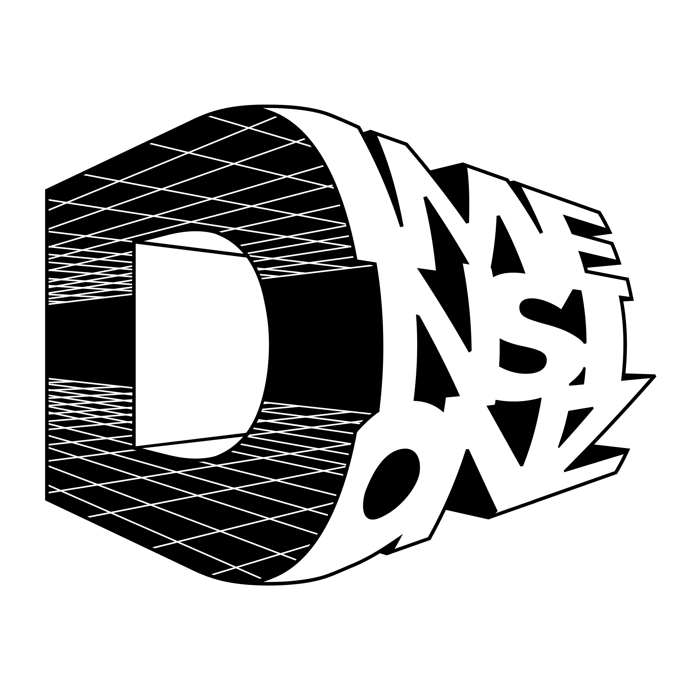
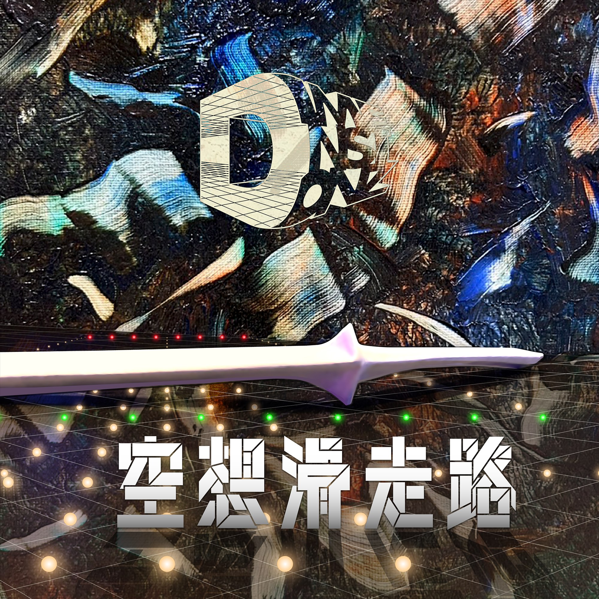

宙にスピーカーで音を送ろう
この度 DIMENSIONZの 『空想滑走路』は ヒップホップか ロックか、テクノか、 もしやUFOのエンジン音？
そんな音をまじめにまとめられんじゃない。 ならばNew Waveです。
わりわりはもはや Nu Waveなのです！
つまり、ぶっとんだ宇宙船。
ジャンルはもうあきらめました。 ジャンルのほうがあきらめました。
DIMENSIONZとは 宇宙と多次元で 本気にあそぶバンドです。
planet-A は放電した その日から ちょっと 時がズレた、、、
pantograph man は、 別の宇宙を見て 歌ってる。
多次元を行き来する Lil Big Bang Baby 全ての陸は彼に通ずる
黒穴の渦に針を落とす Fractal Q a.k.a.PPP 回す事から目が離せない
過去と未来をすこし混ぜる
それがDIMENSIONZ。
そして今回プロデューサーに Dr.gondria（ゴンドウトモヒコ氏）
メジャーでの活動家 だけど今回は 音を整えない。
むしろ 「もっと変でいい」 と言ってくれた
宇宙公認。
ある日、 少年時代の メモリーカセットを 再生してくれたんだ。
そして 過去と未来をすこし混ぜる
それはナイスなDIMENSIONZ
どこかで鳴っている。
その時滑走路は光っている。
リード曲「かえる skit」
それはどこ？いらっしゃい
昼か？夜か？ カエルの歌ね
曲がる 回る 景色何色？
ざく ざくと 進めば やがて BEATは落ちて
ん？ あれ？ちがってら
あなたが落ちて 小さくなる
サイケ。 トリップ。 踊ってごらん。
『ほんのわずかの』 ワルツにのって
気がつけば カエルのお腹で雨宿り
ずっと奥で
月は光り あなたをニヤり
日は光り たぶん あなたをニヤニヤと
『空想滑走路』は 音楽よりも 宇宙へ飛び立つ装置。
なんか気持ちいい。
2026年3月22日。 見えない滑走路が あらわれる。
発進の用意はいいかい?
＋featuring
◯◯◯（Ambi）
spoozin
Electric MJ（松江潤）
Mai Otonari
もふもふちゃん？